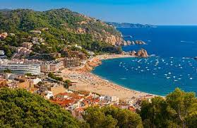

Hiszpania
W Hiszpani warto odwiedzić Costa Brava:
Nazwa Costa Brava oznacza "dzikie wybrzeże" i częściowo oddaje charakter tego miejsca. Costa Brava ciągnie się wzdłuż północnego wybrzeża Morza Śródziemnego , od granicy francusko-hiszpańskiej i kończy nieopodal północno-wschodnich przedmieść Barcelony. Nazwa częściowo oddaje charakter tego miejsca - skaliste klify i sięgające daleko w morze półwyspy oddzielają szerokie, łukowate plaże, nad którymi wyrosły spore ośrodki turystyczne.
Kolejnym miejscem wartym do zwiedzenia jest San Sebastian
Baskijskie wybrzeże z roku na rok przyciąga coraz więcej gości uciekających z zatłoczonego i gorącego południa kraju. San Sebastian rozciągające się wzdłuż słynnej plaży Concha, zamkniętej od wschodu wzgórzem Urgull, a od zachodu Igeldo, nazywane jest czasami "perłą oceanu". Piękno miasta doceniła w przeszłości królowa Izabela II, która przyjeżdżała tu leczyć się i odpoczywać - obecnie robią to setki turystów odwiedzających co sezon najsłynniejszą miejscowość Kraju Basków.